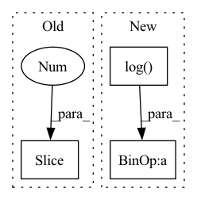

Pattern ID :21502

Before Change
return predictions
def get_loss(self, x):
predictions = self(x[:, :-1])
loss = F.cross_entropy(predictions.reshape(-1, predictions.shape[-1]), x[:, 1:].reshape(-1))
accuracy = (torch.argmax(predictions[:, -1, :], dim=-1) == x[:, -1]).float().mean()
return loss, {"loss": (loss.item(), x.shape[0]*(x.shape[1]-1)), "accuracy": (accuracy.item(), x.shape[0])}
After Change
// print(torch.argmax(predictions[:, -1, :], dim=-1), x[:, -1])
loss = F.cross_entropy(predictions[:, -1, :], y)
accuracy = (torch.argmax(predictions[:, -1, :], dim=-1) == y).float().mean()
attn_entropies = sum([-(attn * torch.log(attn+1e-7)).sum(dim=-1).mean().item() for attn in attns]) / len(attns)
param_norm = parameter_norm(self)
return loss, {"loss": (loss.item(), x.shape[0]), "accuracy": (accuracy.item(), x.shape[0]),
"attn_entropy": (attn_entropies, len(attns)*x.shape[0]*(x.shape[1]-1)), "param_norm": (param_norm, 1)}
In pattern: SUPERPATTERN
Frequency: 3
Non-data size: 3
Instances
Fragment ID: 68824394
Project Name: sea-snell/grokking
Commit Name: 9652db76d1cbdbe66e24e709168b12fa25ba00fc
Time: 2021-11-18
Author: sea_snell@icloud.com
File Name: grokk_replica/grokk_model.py
M Class Name: GrokkModel
N Class Name: GrokkModel
M Method Name: get_loss(3)
N Method Name: get_loss(2)
M Parent Class: nn.Module
N Parent Class: nn.Module
M File Name: grokk_replica/grokk_model.py
N File Name: grokk_replica/grokk_model.py
M Start Line: 17
M End Line: 20
N Start Line: 18
N End Line: 26
'>
Before Change
bboxes_classes = 5 if use_object_scores else 4
bbox_out = det_head(fpn_features, classes=bboxes_classes, bias_init="zeros", head_activation=None, name="regressor_", **head_kwargs)
if use_object_scores:
bbox_out, object_out = bbox_out[:, :, :4], bbox_out[:, :, -1:]
object_out = object_out if classifier_activation is None else activation_by_name(object_out, classifier_activation, name="object_output_")
if num_classes > 0:
After Change
bboxes_features = det_header_pre(fpn_features, num_channels, head_depth, use_sep_conv, activation=activation, name="regressor_")
bboxes_out = det_header_post(bboxes_features, 4, num_anchors, bias_init="zeros", use_sep_conv=use_sep_conv, head_activation=None, name="regressor_")
if use_object_scores:
bias_init = tf.constant_initializer(-tf.math.log((1 - 0.01) / 0.01).numpy())
object_out = det_header_post(bboxes_features, 1, num_anchors, bias_init, use_sep_conv, head_activation=classifier_activation, name="object_")
if num_classes > 0:
'>
Fragment ID: 68824409
Project Name: leondgarse/keras_cv_attention_models
Commit Name: e71df22aa0776cdbf51a9480221b00bf611bccd3
Time: 2022-03-07
Author: leondgarse@gmail.com
File Name: keras_cv_attention_models/efficientdet/efficientdet.py
M Class Name: AnonimousClass
N Class Name: AnonimousClass
M Method Name: EfficientDet(24)
N Method Name: EfficientDet(21)
M Parent Class:
N Parent Class:
M File Name: keras_cv_attention_models/efficientdet/efficientdet.py
N File Name: keras_cv_attention_models/efficientdet/efficientdet.py
M Start Line: 151
M End Line: 200
N Start Line: 151
N End Line: 207
'>
Before Change
transposed_shape = list(shape)
transposed_shape[3], transposed_shape[2] = transposed_shape[2], transposed_shape[3]
inp = jnp.einsum("bfrs,sz,sz->bfrz", inp, weights[0], mask)
for wgt in weights[1:]:
inp = activate(ctx, inp)
inp = inp.reshape(*transposed_shape)
inp = jnp.einsum("bfsr,sz,sz->bfrz", inp, wgt, mask)
After Change
def mix(ctx: Context, inp: jnp.ndarray) -> jnp.ndarray:
original_shape = inp.shape
weight_shape = [ctx.dims.spatial_mixing_kernel] * 2
max_dims = math.ceil(math.log(ctx.dims.sequence, ctx.dims.spatial_mixing_kernel))
mask = jnp.triu(jnp.ones(weight_shape, dtype=ctx.model.computation_dtype)) if ctx.model.autoregressive else 1
weights = [get_param(ctx, f"mix_{i}", weight_shape, std=1, scale=ctx.dims.spatial_mixing_kernel ** -0.5)
for i in range(max_dims)]
if ctx.is_initializing:
return inp
inp = inp.reshape(ctx.dims.batch, -1, *[ctx.dims.spatial_mixing_kernel] * max_dims, ctx.dims.features)
original_dims = "".join(chr(ord("a") + i) for i in range(len(inp.ndim)))
for i, wgt in enumerate(weights):
new_dims = original_dims[:i + 2] + "z" + original_dims[i + 3:]
'>
Fragment ID: 68824405
Project Name: homebrewnlp/homebrewnlp-jax
Commit Name: e3894fce349563809e673ef1a497a476f9bd8d34
Time: 2022-09-01
Author: 39779310+ClashLuke@users.noreply.github.com
File Name: src/model/mixer.py
M Class Name: AnonimousClass
N Class Name: AnonimousClass
M Method Name: mix(2)
N Method Name: mix(2)
M Parent Class:
N Parent Class:
M File Name: src/model/mixer.py
N File Name: src/model/mixer.py
M Start Line: 12
M End Line: 34
N Start Line: 14
N End Line: 32